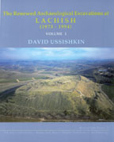

David Ussishkin
The Renewed Archaeological Excavations at Lachish (1973-1994) Volumes I - V
Emery and Claire Yass Publications in Archaeology: Tel Aviv, 2004
 |
CHAPTER 1
Unable to convince other colleagues in the Institute of my designs, I decided to carry on alone. In 1971-1972 I spent a sabbatical leave in London. There I visited Richard Barnett, then Keeper of Western Asiatic Antiquities in the British Museum, to discuss the proposed excavation. I explained to him my plans, and presented five or six possible sites, Tel Lachish being one of them. Barnett, after listening carefully to all suggestions, unhesitatingly favoured Lachish, and convinced me to undertake its re-excavation. That was about a decade after the publication of his article on the Lachish reliefs and the siege ramp (Barnett 1958). Barnett enthusiastically emphasized the importance of the reliefs and the potential of continued excavations at the site. I remembered Tel Lachish very well from the days of my compulsory army service in the 1950s, when we regularly roamed the area in our manoeuvres, and from all I had learned since my boyhood about the biblical city, the Lachish letters, and the murder of Lachish's previous excavator, J.L. Starkey. I could still see in my mind's eye a picture of the ostraca in the Rockefeller Museum, which I visited with my father as a young boy before the 1948 war. So it did not take Barnett long to convince me that I should excavate Lachish. I must add in retrospect, nearly thirty years later, that I have never regretted this decision, even for a second. |
| Back to Publications | Table of Contents |